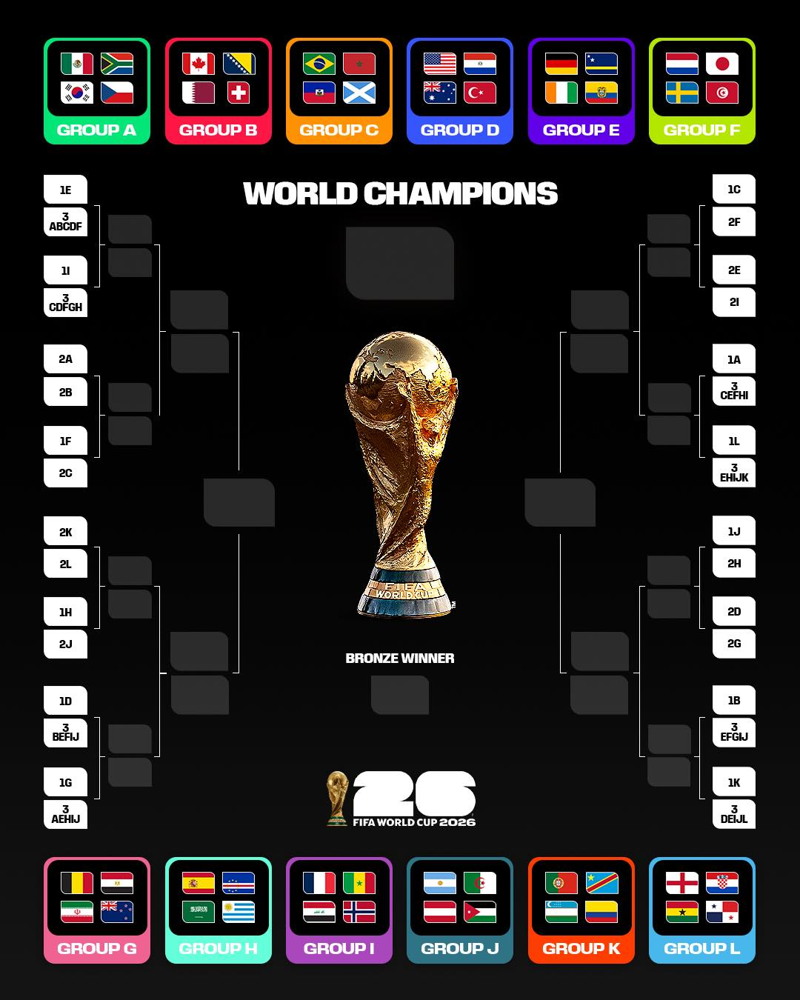

APE Alert
本網站內容僅為個人資料整理與賽事分析參考，不代表保證命中，也不構成投資或投注建議。盤口、陣容與賽果都可能臨場變動，請勿重注、借貸下注或超出自己可承受的範圍。賽果若與預測不同，屬運動賽事正常風險，請理性復盤，不以單場結果歸責任何分析。
Match Center
今日對戰分析
Live Tables
目前小組積分與晉級狀態
Road to Round of 32
已晉級與下一輪可能對手

News Weight
即時新聞與盤口影響
Portfolio
每日更新
點選分頁看目前積分、誰已晉級、下一輪可能對手、國旗對戰、台灣盤口、正確比分、球員新聞和戰術安排。
本網站內容僅為個人資料整理與賽事分析參考，不代表保證命中，也不構成投資或投注建議。盤口、陣容與賽果都可能臨場變動，請勿重注、借貸下注或超出自己可承受的範圍。賽果若與預測不同，屬運動賽事正常風險，請理性復盤，不以單場結果歸責任何分析。
Match Center
Live Tables
Road to Round of 32

News Weight
Portfolio